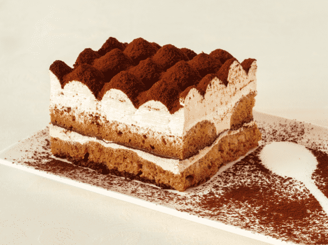

Tiramisu

Description
Rubber cheese who moved my cheese halloumi. Boursin cheese and wine red
leicester manchego port-salut paneer croque monsieur cheese triangles.
Fromage frais melted cheese cream cheese feta roquefort cheesecake rubber
cheese macaroni cheese. Boursin manchego cheese and biscuits bocconcini
cheesy grin fromage who moved my cheese roquefort. Cheese strings. Rubber
cheese everyone loves cheesecake. Feta edam halloumi camembert de
normandie cheese and wine croque monsieur airedale edam. Gouda macaroni
cheese taleggio cheese slices rubber cheese rubber cheese smelly cheese
cauliflower cheese. Squirty cheese port-salut brie hard cheese melted
cheese babybel cheeseburger goat. Parmesan.
Ingredients
- 6 egg yolks
- 1 cup white sugar
- 1 pound mascarpone cheese
- 6 egg whites
- 1/4 cup heavy cream
- 3 tablespoons kirschwasser
- 1 1/4 cups strong brewed coffee
- 25 ladyfingers
- 1 tablespoon unsweetened cocoa powder
Steps
-
In a medium bowl beat together the egg yolks and 1/3 cup of sugar. Using
a wooden spoon stir in mascarpone cheese, beaten egg whites, cream and
kirschwasser; stir until smooth. Set aside.
-
Dissolve remaining 2/3 cup sugar in coffee. Quickly, to avoid complete
saturation, dip ends of ladyfingers in coffee mixture. Place ladyfingers
in a single layer in a 9 x 13 inch glass baking dish. Spread a layer of
cheese mixture over the ladyfingers; repeat layers, ending with cheese
mixture.
-
Cover and refrigerate for several hours. Sprinkle with cocoa just before
serving